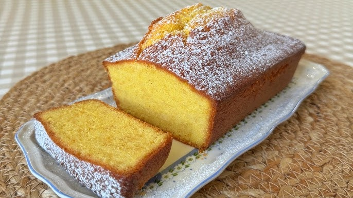
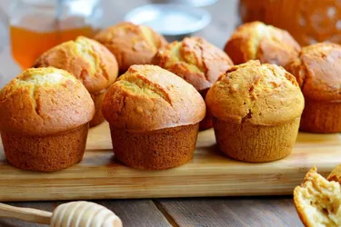

Банановий кекс
Інгредієнти:
Банани, борошно, яйця, розпушувач, цукор, масло.
Рецепт:
Розімни банани, змішай з іншими інгредієнтами, залий у форму і випікай ~45 хв при 180°C.
Шоколадний кекс
Інгредієнти:
Какао, яйця, цукор, борошно, розпушувач, молоко.
Рецепт:
Змішай сухі і рідкі інгредієнти окремо, потім з’єднай, залий у форму, пекти ~40 хв.

Ванільний кекс
Інгредієнти: Борошно, яйця, цукор, ваніль, масло, розпушувач.
Рецепт: Змішайте інгредієнти, розкладіть у формочки, випікайте 20 хвилин.
Лимонний кекс
Інгредієнти: Лимонна цедра, лимонний сік, борошно, яйця, цукор.
Рецепт: Додайте сік та цедру до тіста, випікайте до золотистої скоринки.
Морквяний кекс
Інгредієнти: Морква, борошно, яйця, цукор, спеції, горіхи.
Рецепт: Натріть моркву, змішайте з тістом, випікайте, подавайте з кремом.
Кекс з чорницею
Інгредієнти: Борошно, чорниця, яйця, масло, цукор.
Рецепт: Додайте ягоди до тіста, випікайте до рум’яності.
Фісташковий кекс
Інгредієнти: Фісташки, борошно, яйця, цукор, масло.
Рецепт: Подрібнити фісташки, змішати з тістом, випікати до готовності.
Кекс з сиром
Інгредієнти: Сир, яйця, борошно, цукор, сметана.
Рецепт: Сир розтерти з цукром, додати до тіста, випікати до рум’яності.

Апельсиновий кекс
Інгредієнти: Апельсинова цедра, сік, борошно, яйця, цукор.
Рецепт: Змішайте всі інгредієнти, випікайте при 180°C 20-25 хвилин.

Кекс з маком
Інгредієнти: Мак, борошно, яйця, масло, цукор.
Рецепт: Додайте мак у тісто, випікайте до готовності, охолодіть.